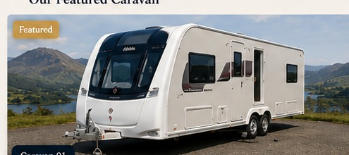
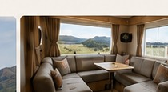
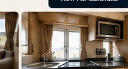
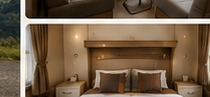
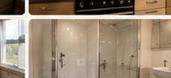

Your next escape.
Beautifully considered.
2020 Elddis Avanté 866 — 6 berth. Collect from Carlisle and tow with your approved vehicle. Premium comfort, clear pricing and unlimited UK mainland mileage.
2020 Elddis Avanté 866
A spacious 6-berth, twin-axle family touring caravan. Manufacturer reference photography of the same Elddis Avanté 866 model; finishes and accessories may vary.





Hire pricing — 2020 Elddis Avanté 866
These rates apply to this caravan only. Future caravans, statics or lodges will have their own independent pricing.
Low season
March, April, October
£595 / 7 nightsStandard season
May, June, September
£650 / 7 nightsPeak season
July, August + configured school/bank holiday periods
£795 / 7 nightsShort-break hire — low & standard season only
Secure the dates, then pay the balance.
£250 booking deposit
Non-refundable booking deposit due when booking more than 12 weeks ahead.
Balance due 12 weeks before
The remaining hire balance is due 12 weeks before collection.
Within 12 weeks
Bookings made within 12 weeks of collection are payable in full.
£1,000 security deposit
Separate refundable security deposit before collection, subject to final insurer/excess confirmation.
Unlimited mileage across mainland Britain.
Unlimited UK mainland mileage
Travel throughout mainland England, Scotland and Wales with no mileage cap.
Destination declared
Your planned campsite or destination is recorded during booking.
Approved tow vehicle
Vehicle suitability and towing details are checked before release.
Customer-supplied bedding
Customers bring their own bedding and towels unless an optional linen service is added later.
Five simple steps.
Choose dates
Green dates are available. Select your collection and return.
Add details
Tell us who's towing, the vehicle and your planned destination.
Pay securely
Pay the £250 booking deposit or full hire price if inside 12 weeks.
Collect
Complete digital handover, photos and signatures.
Return
Check-out condition report and security-deposit review.
Own a caravan, static or lodge?
Lakeland Touring is structured so future listings can have their own diary, prices and rules — while the 2020 Avanté 866 remains the only bookable unit at launch.